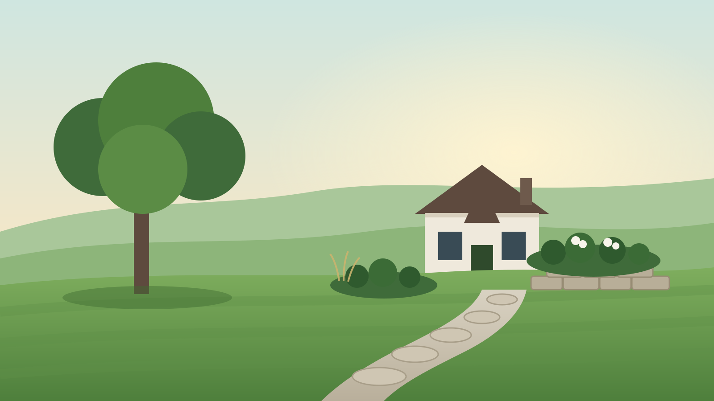

Yards you’ll want to spend time in.
Landscape design, installation, and weekly care for homes across Middle Tennessee.
The yard through the year.
One crew for the whole yard, so nothing falls between contractors. Here’s what we do, and when it’s best done.
Spring Mar–May
- PlantingTrees, shrubs, and perennials chosen to thrive here, not just look good at the nursery.
- Beds and mulchEdged, weeded, and mulched before the weeds get going.
- Lawn care startsWeekly mowing and edging on a set day.
Summer Jun–Aug
- Mowing and edgingEvery week, cut high in the heat so the grass holds up.
- Watering checksWe spot dry patches and adjust before they brown.
- Outdoor lightingLow-voltage path and garden lights on a timer, for long evenings outside.
Fall Sep–Nov
- Seasonal cleanupLeaves out, beds edged and mulched, perennials cut back.
- Aeration and seedingThe best time to thicken a tired lawn.
- Trees and bulbsCooler soil, easier roots: the planting season people forget.
Winter Dec–Feb
- Landscape designA drawn plan for beds, paths, and plantings that suit your house and your soil.
- Patios and walkwaysNatural stone, pavers, and gravel, set on a proper base so they stay level.
- PruningShaping while the branches are bare.
Want just one of these? That’s fine too. Most yards start with a single job.
Three steps to a finished yard.
You’ll know the plan and the price before any work starts.
Walk the yard
We visit, measure, and listen to how you want to use the space.
Plan and price
You get a drawing and a written estimate, line by line.
Build and care
Our crew installs it, then keeps it looking right if you want ongoing care.
Close to home.
We work within about 30 miles of our yard. Not sure if you’re in range? Ask in the form.
- Brentwood
- Franklin
- Nolensville
- Spring Hill
- Thompson’s Station
- Arrington